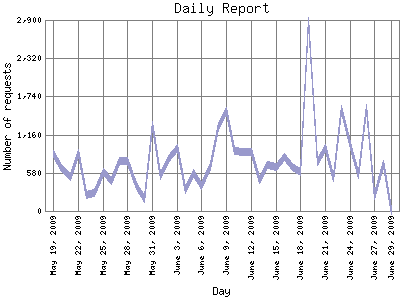

Analog 5.32
Analog 5.32 Report Magic 2.21
Report Magic 2.21The Daily Report identifies the activity for each day within the reporting period. Remember that one page hit can result in several server requests as the images for each page are loaded.

| Day | Number of requests | Percentage of the requests | |
|---|---|---|---|
| 1. | June 29, 2009 | 2 | 0.00% |
| 2. | June 28, 2009 | 714 | 0.16% |
| 3. | June 27, 2009 | 229 | 0.05% |
| 4. | June 26, 2009 | 1,560 | 0.34% |
| 5. | June 25, 2009 | 549 | 0.12% |
| 6. | June 24, 2009 | 988 | 0.22% |
| 7. | June 23, 2009 | 1,548 | 0.34% |
| 8. | June 22, 2009 | 502 | 0.11% |
| 9. | June 21, 2009 | 958 | 0.21% |
| 10. | June 20, 2009 | 745 | 0.16% |
| 11. | June 19, 2009 | 2,880 | 0.63% |
| 12. | June 18, 2009 | 592 | 0.13% |
| 13. | June 17, 2009 | 666 | 0.15% |
| 14. | June 16, 2009 | 827 | 0.18% |
| 15. | June 15, 2009 | 670 | 0.15% |
| 16. | June 14, 2009 | 700 | 0.15% |
| 17. | June 13, 2009 | 465 | 0.10% |
| 18. | June 12, 2009 | 893 | 0.20% |
| 19. | June 11, 2009 | 895 | 0.20% |
| 20. | June 10, 2009 | 914 | 0.20% |
| 21. | June 9, 2009 | 1,520 | 0.33% |
| 22. | June 8, 2009 | 1,297 | 0.28% |
| 23. | June 7, 2009 | 686 | 0.15% |
| 24. | June 6, 2009 | 375 | 0.08% |
| 25. | June 5, 2009 | 582 | 0.13% |
| 26. | June 4, 2009 | 314 | 0.07% |
| 27. | June 3, 2009 | 952 | 0.21% |
| 28. | June 2, 2009 | 797 | 0.17% |
| 29. | June 1, 2009 | 530 | 0.12% |
| 30. | May 31, 2009 | 1,312 | 0.29% |
| 31. | May 30, 2009 | 182 | 0.04% |
| 32. | May 29, 2009 | 375 | 0.08% |
| 33. | May 28, 2009 | 763 | 0.17% |
| 34. | May 27, 2009 | 758 | 0.17% |
| 35. | May 26, 2009 | 455 | 0.10% |
| 36. | May 25, 2009 | 599 | 0.13% |
| 37. | May 24, 2009 | 271 | 0.06% |
| 38. | May 23, 2009 | 238 | 0.05% |
| 39. | May 22, 2009 | 877 | 0.19% |
| 40. | May 21, 2009 | 516 | 0.11% |
| 41. | May 20, 2009 | 653 | 0.14% |
| 42. | May 19, 2009 | 864 | 0.19% |
Most active day January 23, 2009 : 57,834 requests handled.
Daily average: 766 requests handled.
This report was generated on June 29, 2009 05:50.
Report time frame August 13, 2008 23:20 to June 29, 2009 00:00.
| Web statistics report produced by: | |
| Analog 5.32 | Report Magic 2.21 |